Evaluation metrics¶
Apart from qualitative visual comparison, it is important to have a refined evaluation metric for class activation maps. This submodule is dedicated to the evaluation of CAM methods.
Classification confidence¶

ClassificationMetric(cam_extractor: _CAMExtractor, logits_fn: Callable[[Tensor], Tensor] | None = None)
Implements Average Drop and Increase in Confidence from "Grad-CAM++: Improved Visual Explanations for Deep Convolutional Networks.".
The raw aggregated metric is computed as follows:
where \(\mathcal{C}\) is the set of class activation generators, \(\mathcal{M}\) is the set of classification models, with the function \(f_{m, c}\) defined as:
where \(E_{m, c}(x)\) is the class activation map of \(m\) for input \(x\) with method \(m\), resized to (H, W),
and with the function \(g_{m, c}\) defined as:
Example
Source code in torchcam/metrics.py
Update the state of the metric with new predictions.
| PARAMETER | DESCRIPTION |
|---|---|
input_tensor
|
preprocessed input tensor for the model
TYPE:
|
class_idx
|
class index to focus on (default: index of the top predicted class for each sample) |
Source code in torchcam/metrics.py
Computes the aggregated metrics.
| RETURNS | DESCRIPTION |
|---|---|
dict[str, float]
|
a dictionary with the average drop and the increase in confidence |
| RAISES | DESCRIPTION |
|---|---|
AssertionError
|
if the metric has not been updated |
Source code in torchcam/metrics.py
Deletion and insertion faithfulness¶
Deletion and insertion measure how the model's selected-class score changes as spatial positions are perturbed in descending CAM order. For an input \(X\), baseline \(B\), and the set \(R_t\) containing the top-ranked positions restored or removed by step \(t\):
The same spatial mask is applied to every input channel. If \(x_t = |R_t| / P\) is the actual perturbed fraction for \(P\) spatial positions and \(s_c\) is the selected-class score, TorchCAM computes:
Lower deletion AUC and higher insertion AUC indicate a more faithful ranking. Both the unperturbed and fully perturbed endpoints are included. steps is the maximum number of intervals: each interval changes \(\lceil P / \text{steps} \rceil\) positions, except for the shorter final interval, and integration uses the resulting fractions rather than an assumed uniform grid.
The default baseline is zeros_like(input_tensor). This represents the dataset mean only when inputs were normalized so that the mean maps to zero. Baseline choice can introduce out-of-distribution evidence and materially change both scores. The original RISE evaluation used constant deletion values and a blurred insertion substrate, while this metric deliberately uses one baseline for both curves. To reproduce those two substrates, run the metric separately with each baseline and compare only the corresponding AUC.
batch_size limits how many perturbed inputs are scored in one forward pass. It bounds temporary memory but does not reduce the number of perturbed samples. With \(S\) effective intervals, each valid input requires \(2S - 1\) additional scoring samples, plus the original CAM-producing forward and any backward pass required by the extractor.
By default, the metric integrates raw model outputs. Pass a function such as softmax for probability curves comparable to the paper; raw-logit AUCs may fall outside \([0, 1]\) and should not be compared with probability AUCs.
from functools import partial
import torch
from torchcam.methods import GradCAM
from torchcam.metrics import DeletionInsertionMetric
model.eval()
with GradCAM(model, "layer4") as cam_extractor:
metric = DeletionInsertionMetric(
cam_extractor,
partial(torch.softmax, dim=-1),
steps=20,
batch_size=32,
)
metric.update(input_tensor)
scores = metric.summary()
Warning
Deletion and insertion test perturbation faithfulness to the model's score. They do not establish localization quality, human interpretability, or causal correctness outside the chosen perturbation and baseline protocol.
DeletionInsertionMetric(cam_extractor: _CAMExtractor, logits_fn: Callable[[Tensor], Tensor] | None = None, *, steps: int = 20, baseline: Tensor | Callable[[Tensor], Tensor] | None = None, batch_size: int = 32)
Implements deletion and insertion faithfulness metrics from "RISE: Randomized Input Sampling for Explanation of Black-box Models.".
Spatial positions are ranked from the highest to the lowest CAM value. Deletion progressively replaces the
highest-ranked positions with a baseline, while insertion progressively restores them from the original input.
The mask is shared across channels. Both scores are areas under the selected-class score curves, integrated
against the actual perturbed fraction with :func:torch.trapezoid.
Example
| PARAMETER | DESCRIPTION |
|---|---|
cam_extractor
|
CAM extractor used to rank spatial positions
TYPE:
|
logits_fn
|
optional function applied to the model output before selecting class scores |
steps
|
maximum number of perturbation intervals
TYPE:
|
baseline
|
baseline tensor, callable producing one, or
TYPE:
|
batch_size
|
maximum number of perturbed inputs scored per model forward
TYPE:
|
| RAISES | DESCRIPTION |
|---|---|
TypeError
|
if an argument has an invalid type |
ValueError
|
if |
Source code in torchcam/metrics.py
Update the metric with a batch of inputs.
| PARAMETER | DESCRIPTION |
|---|---|
input_tensor
|
preprocessed model input
TYPE:
|
class_idx
|
shared class index, one class index per sample, or |
Source code in torchcam/metrics.py
Compute the mean deletion and insertion AUCs.
| RETURNS | DESCRIPTION |
|---|---|
dict[str, float]
|
deletion and insertion AUCs averaged over non-NaN samples |
| RAISES | DESCRIPTION |
|---|---|
AssertionError
|
if the metric has not been updated with a valid CAM |